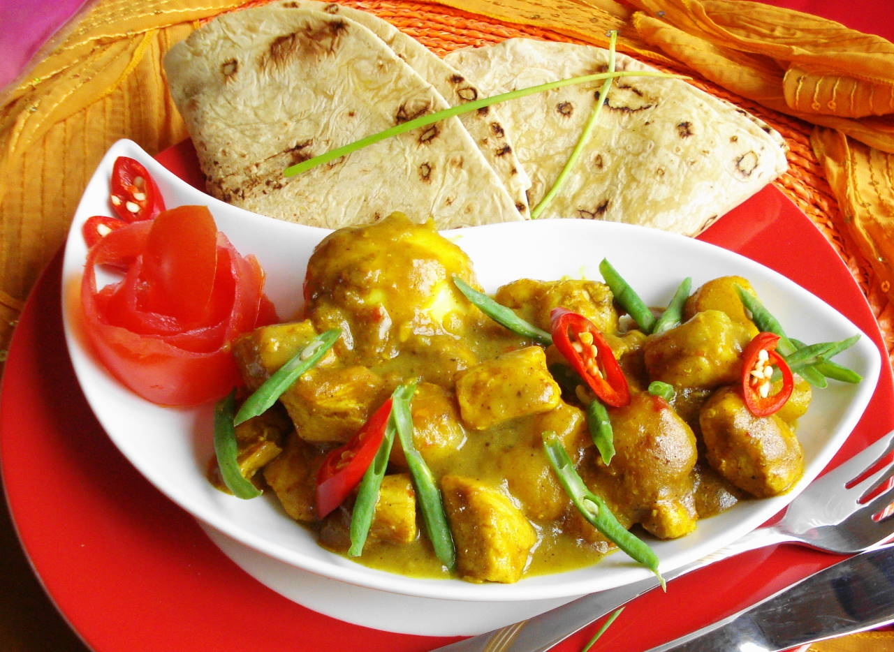

home
Surinamese Roti

Surinamese Roti
Oyakodon is a classic Japanese rice bowl dish whose name means “parent-and-child donburi,”
symbolizing its main ingredients: chicken and egg. Tender chicken pieces and onions are simmered in a savory-sweet broth of dashi,
soy sauce, and mirin, then topped with gently cooked beaten eggs for a silky texture. Served over steamed rice, oyakodon is both hearty and comforting,
balancing sweet and savory flavors in a simple, homestyle meal that highlights the essence of Japanese comfort food.
Ingredients:
- 500 grams of potato
- 300 grams of chicken breast
- 4 tbsp of masala
- 250 grams of long beans
- 1 madame Jeanette pepper
- Roti wraps
Recipe steps:
- Cut the potato, chicken breast, and long beans into bite size pieces
- Put the potato in a wok, with a bit of oil and with the chicken
- After the chicken is seared shut, add the masala, together with the madame Jeanette pepper and mix it together
- Cover the mixture with water, until almost everything is covered, and let it simmer for 15 minutes
- After 15 minutes, add the long beans and let it simmer some more for approximately 10 minutes
- Heat the roti wraps up in the microwave for 15 seconds each, and put the filling from the wok, together with the roti wraps on a plate to serve